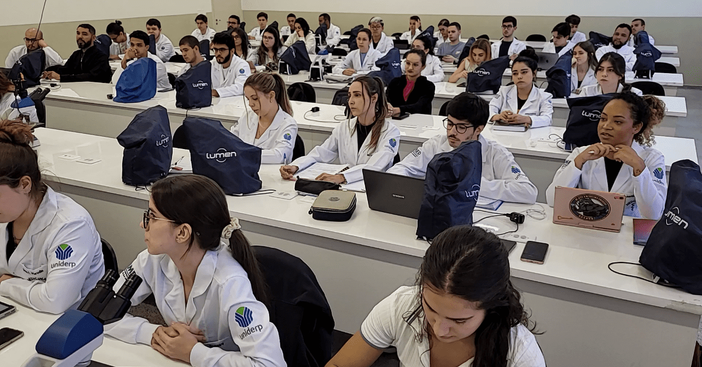
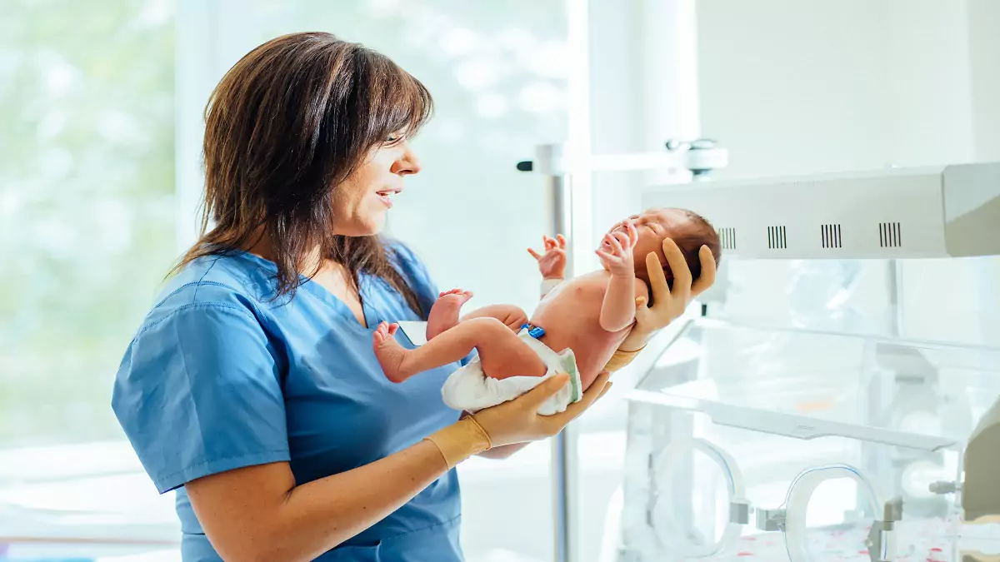

Acompanhe comigo meus planos para SE eu conseguir passar de ano viva...

Após fazer muitos cursos...
Eu pretendo fazer vestibular da UFPR...

Após estudar muito...
Quero fazer a faculdade de medicina...

Após quase morrer estudando...
Quero fazer pós em Neonatologia ou Oncologia Pediatra